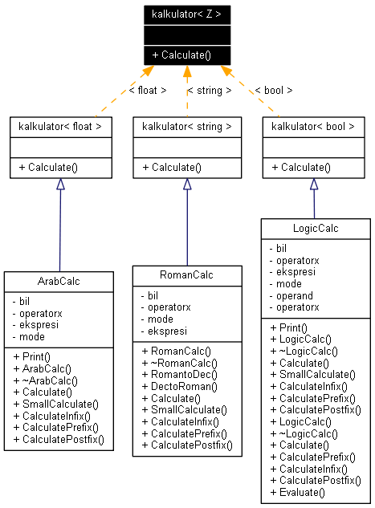

kalkulator< Z > Class Template Reference
Kelas interface penghitungan, implementasi masing-masing di setiap mode kalkulator.
More...
#include <kalkulator.h>
Inheritance diagram for kalkulator< Z >:

[legend]List of all members.
Detailed Description
template<class Z>
class kalkulator< Z >
Kelas interface penghitungan, implementasi masing-masing di setiap mode kalkulator.
The documentation for this class was generated from the following file:
Generated on Thu Mar 26 00:29:13 2015 by
 1.4.5
1.4.5